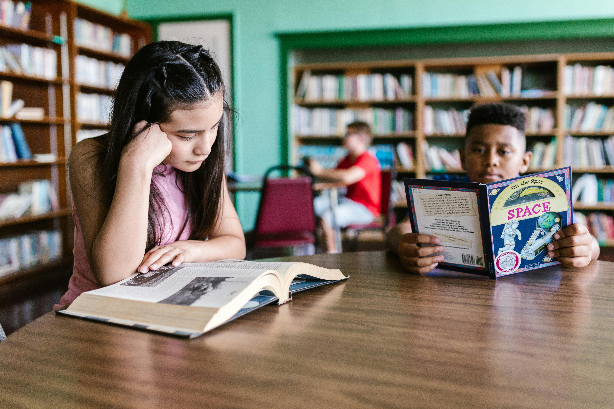
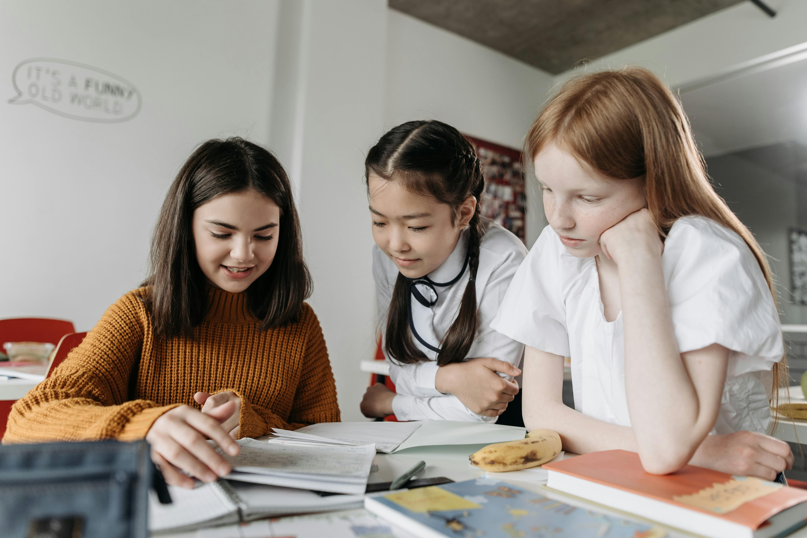

Nossos Projetos
Conheça as iniciativas que estão mudando realidades através da educação e da leitura. Cada projeto tem um foco único, mas todos compartilham o mesmo objetivo: cultivar o saber.

Biblioteca Comunitária
Nossa principal iniciativa! Montamos e administramos pequenas bibliotecas em áreas carentes, oferecendo um espaço seguro e rico para o aprendizado.
Saiba Mais →Contadores de Histórias
Voluntários visitam orfanatos e hospitais, levando a magia da leitura para crianças que não podem ir até nossas bibliotecas. Uma tarde de alegria e imaginação.
Quero ser voluntário →
Reforço Escolar "Saber+"
Oferecemos aulas de reforço gratuitas de português e matemática, ajudando crianças a superarem dificuldades de aprendizado e melhorarem seu desempenho.
Ver horários →